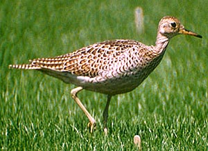

| These photographs accompany records that have been recently submitted to the committee. This record
has been ACCEPTED.  Upland Sandpiper Bartramia longicauda 16 Sep. 1990, Oxnard Plain, VEN 1990-124 © 1990 Don DesJardin Back to CBRC Rare Bird Photos |